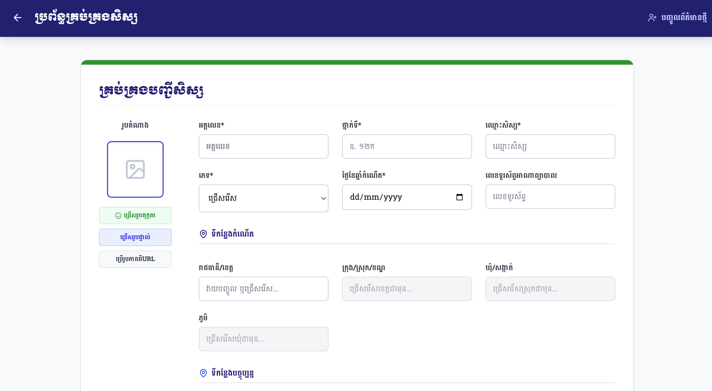
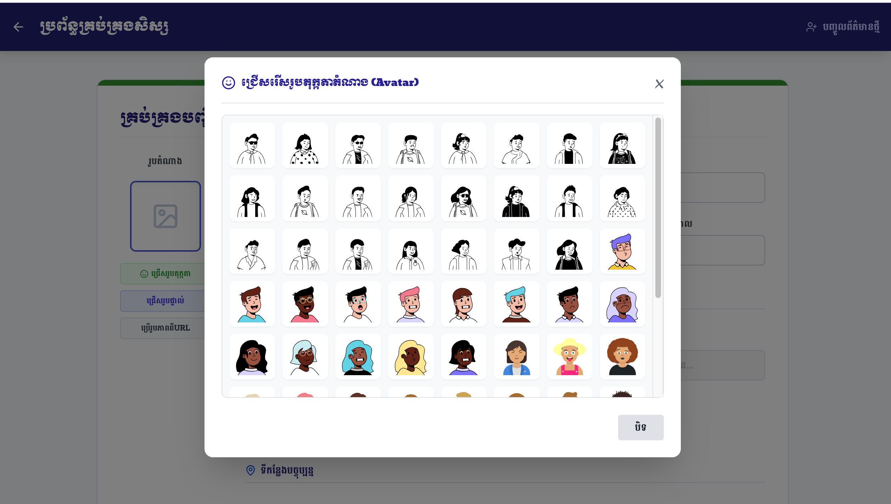
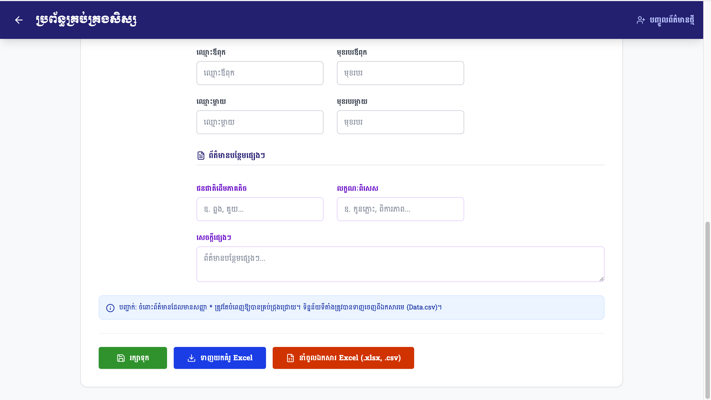

សៀវភៅណែនាំងាយស្រួលយល់សម្រាប់ការគ្រប់គ្រងទិន្នន័យសិស្ស
ប្រព័ន្ធគ្រប់គ្រង និងបញ្ចូលទិន្នន័យសិស្ស (ជំនាន់ ២.០)
ដើម្បីបញ្ចូលសិស្សថ្មី លោកអ្នកត្រូវបំពេញព័ត៌មានសំខាន់ៗមួយចំនួន។ សូមកត់សម្គាល់ថា ប្រអប់ដែលមានសញ្ញាផ្កាយ (*) គឺជាព័ត៌មានចាំបាច់ដែលមិនអាចរំលងបាន៖

ប្រព័ន្ធផ្តល់ជម្រើស ៣ យ៉ាងក្នុងការកំណត់រូបថតឱ្យសិស្ស ដែលមានទីតាំងនៅខាងឆ្វេងដៃបំផុត៖
ចុចប៊ូតុងនេះ ផ្ទាំងមួយនឹងលោតឡើងបង្ហាញរូបតុក្កតាដ៏ស្រស់ស្អាតជាច្រើន (បង្កើតដោយ AI) ដើម្បីយកមកធ្វើជារូបតំណាងសិស្សបានយ៉ាងឆាប់រហ័ស។
ទាញយករូបថតពីក្នុងទូរស័ព្ទ ឬកុំព្យូទ័រ។ *ទំហំមិនត្រូវលើសពី 2MB។

នៅពេលលោកអ្នកបំពេញទីកន្លែងកំណើត ឬទីកន្លែងបច្ចុប្បន្ន លោកអ្នកមិនចាំបាច់វាយអត្ថបទវែងៗនោះទេ៖
ដើម្បីសន្សំពេលវេលា ប្រព័ន្ធអនុញ្ញាតឱ្យលោកអ្នកបញ្ចូលសិស្សរាប់រយនាក់ក្នុងពេលតែមួយតាមរយៈឯកសារ Excel៖

ចុចលើប៊ូតុងពណ៌ខៀវខាងក្រោមគេបង្អស់ លោកអ្នកនឹងទទួលបាន File គំរូ។ សូមវាយបញ្ចូលទិន្នន័យសិស្សចូលក្នុង File នោះ រួច Save។
ចុចលើប៊ូតុងពណ៌ទឹកក្រូច រួចជ្រើសរើស File ដែលអ្នកបានរៀបចំ។ ប្រព័ន្ធនឹងអានទិន្នន័យ និងរក្សាទុកចូលក្នុង Database ដោយស្វ័យប្រវត្តិ។
ទិន្នន័យនឹងត្រូវរក្សាទុកទៅក្នុង Cloud Database (Firebase) ដោយមានសុវត្ថិភាពខ្ពស់ ដែលអាចបើកមើលពីឧបករណ៍ណាក៏បាន។
នៅពេលអ្នកចូលកែប្រែសិស្ស ប៊ូតុងរក្សាទុកនឹងប្តូរឈ្មោះទៅជា ធ្វើបច្ចុប្បន្នភាព ដោយស្វ័យប្រវត្តិ។
ដើម្បីកាន់តែងាយយល់ និងឃើញការអនុវត្តផ្ទាល់ សូមទស្សនាវីដេអូនៅខាងក្រោមនេះ៖